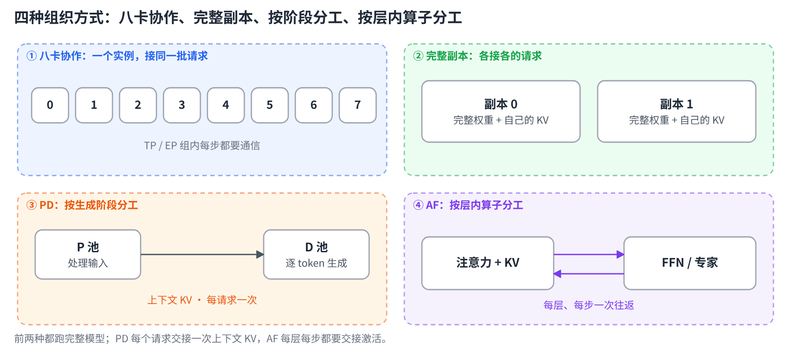
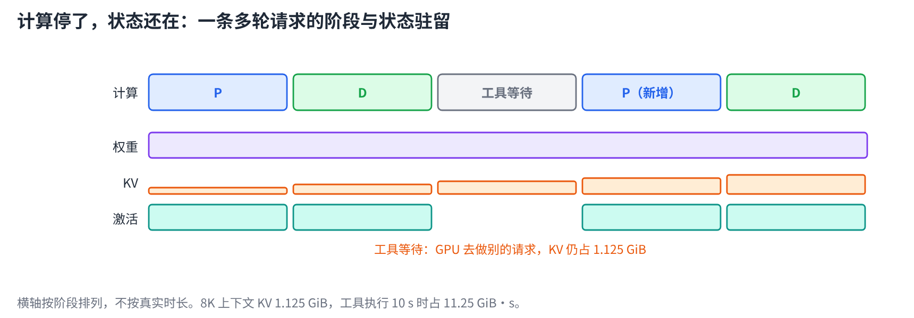
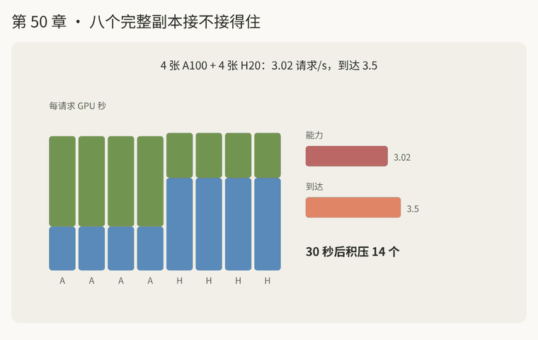

第 50 章 · 计算与状态的分布方式：八张卡怎么接每秒 3.5 个请求
本地运行
git clone https://github.com/wikieden/ai-infra-from-constraints
cd ai-infra-from-constraints/code/notebooks
pip install jupyterlab torch numpy
jupyter lab ch50_distribution.ipynb也可以下载后直接用 VS Code 打开 .ipynb 运行。需要 GPU 的章节在 Colab 里选「代码执行程序 → 更改运行时类型 → GPU」。
本章回答：一台四张 A100、一台四张 H20，每秒来 3.5 个 8K 输入、1025 输出的请求，八张卡各跑一份完整模型够不够？"资源数 × 占用秒数"怎么算出缺口？完整副本、PD 分离、AF 分离、共享 KV 各改变系统的哪一部分？工具调用等 10 秒时，GPU 闲着，KV 为什么还占着？
讲解日期：2026-11-24 · 上一章：第 49 章 请求负载下的性能与配置选择 · 下一章：第 51 章 Prefill–Decode 分离与资源配比
对应原文：materials/ai-infra-book/manuscripts/09-分布式推理.md章首 L1–L11、§9.1 L13–L85（图 9-1 至 9-5）
本章缩写：P = Prefill（预填充）· D = Decode（逐步解码）· PD = Prefill–Decode（预填充—解码）分离 · AF = Attention–FFN（注意力—前馈网络）分离 · worker（执行单元）· rank（通信组里的编号）。全部缩写见 缩写与术语表
第 8 部分在一组固定的卡上把请求组织好。本部分换个问题：计算和状态放在哪里。哪些卡做哪个阶段、哪个算子，权重和 KV 放哪，卡之间传什么、出故障怎么办。上下文长了，状态可能比权重还大：batch 32 时 KV 共 43.5 GB，是 Qwen3-8B 权重的 2.7 倍。
本部分的贯穿实例（原文 L9）：
| 设定 | |
|---|---|
| 卡 | 服务器 1：4 × A100 80GB SXM；服务器 2：4 × H20 SXM5 96GB；两台之间只有 200 Gbit/s RDMA 网卡（每方向 25 GB/s） |
| 模型 | Qwen3-8B，权重和 KV 都是 BF16，一张卡放得下整个模型，所以一张卡就是一个 worker |
| 负载 | 每秒 3.5 个请求，每个输入 8192 token、输出 1025 token（带思考过程） |
| 目标 | 持续接住，并且启动后的积压按期清空（第 55 章） |
另一个贯穿算例是 Qwen3-235B-A22B，看专家权重放在哪（第 52、53 章）。
讲解
第一步：资源数 × 占用秒数（2026-11-24）
类比：洗车行。 每辆车占一个工位 0.5 小时，每小时来 4 辆，就得有 2 个一直在洗的工位。如果恰好只有 2 个，偶尔多来一辆就永远排着，因为工位一直被后面的车占满。
原文 L41–L57：每个请求在资源 \(r\) 上占用平均 \(d_r\) 秒，同类资源有 \(n_r\) 个能独立工作的单元，到达率 \(\lambda\) 要满足
同一资源上的多个操作先把占用时间相加；用不同资源的操作，各列一条约束。这个乘积叫 GPU 秒。
一个完整副本串行做两个阶段，\(N\) 个相同副本的请求率上限：
| 卡 | prefill（8192 token） | 1024 次 decode 合计 | 每请求 GPU 秒 |
|---|---|---|---|
| A100 | 0.86 s | 1.76 s | 2.62 |
| H20 | 1.81 s | 0.88 s | 2.68 |
八张卡合计 \(4/2.62 + 4/2.68 \approx 3.02\) 请求/s，比到达的 3.5 少，每秒积压约 0.5 个。这两列数字怎么从数据表推出来，留到第 51 章；先注意两种卡强弱正好相反：A100 prefill 快一倍，H20 decode 快一倍。
本章的问题：同样八张卡，重新分工能不能补上这 0.5 请求/s？
一句话：先把每个请求换算成各类资源上的占用秒数，乘到达率，和资源个数比。
第二步：四种组织方式（2026-11-24）
类比：一家装修公司接单。 多开几个全能施工队（副本）；或者设计组只出图、施工队只施工（PD）；或者每个房间里木工和电工轮流进出（AF）；或者把出过的图纸存进资料室，下一单类似的直接拿（共享 KV）。

图 50-1 · 前两种都跑完整模型；PD 交接一次上下文 KV，AF 每层、每步都要交接激活。
原文 L15–L72：
| 部署方式 | 希望获得 | 新增的主要约束 |
|---|---|---|
| 增加完整副本 | 处理更多独立请求，分散排队 | 模型复制、缓存分散、启动与保持运行 |
| PD 分离 | 两个阶段各配各的能力 | KV 交接、两端同时占内存、两个队列 |
| AF 分离 | 算子用合适的计算与存储 | 逐层激活往返、同步、流水各段平衡 |
| 共享 KV | 跨实例复用上下文，少做重复 prefill | 缓存标识、读取、就绪通知、失效与释放 |
- 推理实例可以由多张卡上的多个进程组成，每个进程在通信组里有一个 rank。
- 完整服务副本有完成整次推理需要的全部权重和执行能力，能独立接请求。
- 副本可以由多卡组成：Qwen3-235B-A22B 用 TP2×EP4 的八卡跑一个实例时，注意力和 KV 在四个 EP 组各复制一份，8K 上下文在实例里占 \(4 \times 1.469 = 5.875\) GiB，是一份逻辑 KV 的 4 倍（每 token 188 KiB）。想多一个能独立接请求的副本，要再配一整套权重和状态。
怎么选：两个阶段的资源需求差不多时，完整副本已经均衡，分离只会添交接开销；很多请求共享长前缀时，跨实例缓存可能比继续拆分计算更值钱。
场景代码：vLLM 里一个实例几张卡、开几个数据并行副本，是两个独立的参数（真实 API）：
from vllm import LLM
# 一个实例用 2 张卡做张量并行；要多个能独立接请求的副本，另开实例或用 data_parallel_size
llm = LLM(model="Qwen/Qwen3-8B", dtype="bfloat16", tensor_parallel_size=2)
# 命令行：vllm serve Qwen/Qwen3-8B --tensor-parallel-size 1 --data-parallel-size 8
一句话：副本改的是请求分给谁，PD 改阶段在哪做，AF 改层内算子在哪做，共享 KV 改状态能被谁用；可以单独用，也可以叠着用。
第三步：计算停了，状态还在（2026-11-24）
类比：餐厅订座。 客人出去接电话 10 分钟，厨房可以先做别桌的菜，但他的桌子和没吃完的菜还得留着。
原文 L74–L84：沿一条多轮请求的时间线看，带视觉输入时先有 E（视觉编码）、EC（存下的编码结果），然后 P、D；工具返回后新一轮 P 处理新增信息。权重跨请求保留，激活只在相邻算子之间传，KV 随已处理的位置增长。

图 50-2 · 横轴按阶段排列，不按真实时长。
- 8192 token 的 BF16 上下文 KV 占 1.125 GiB。工具执行 10 秒，GPU 可以去做别的请求，但这 1.125 GiB 还在，容量 × 时长 = 11.25 GiB·s；十个会话一起等，就是 11.25 GiB。这正是共享缓存和换出要解决的问题（第 54 章）。
- 返回 1025 个 token 时，P 产生第 1 个，1024 次 decode 产生其余；KV 覆盖 \(8192 + 1024 = 9216\) 个 token，最后一个返回的 token 还没送回模型。下一轮从这里接着算。
一句话：状态按"占多少 × 占多久"算账，计算暂停不等于状态释放。
动画演示：副本够不够接住到达

可交互版：animations/50-distribution.html（滑块：到达率 1–6 请求/s；A100 数 0–8；H20 数 0–8）。
怎么看：
- 左边每张卡一根柱，高度是每请求 GPU 秒（P 蓝、D 绿）（第一步）；
- 右边是副本能力 \(\sum N/(d_P + d_D)\) 和到达率，下面是 30 秒内积压的请求数；
- 播放：4 + 4 卡、3.5 请求/s（积压）→ 到达降到 3.0（刚好接住）→ 八张 A100 → 加到 10 张卡。
练习与作答记录
题 1（第一步）：每秒到达 6 个请求，每个在 A 类卡上 0.4 GPU 秒、在 B 类网卡上 0.05 秒。A 类卡至少几张？B 类网卡至少几块？
作答记录：（待作答）
题 2（第一步）：只用八张 H20 做完整副本，请求率上限多少？比 4 + 4 的组合高还是低？
作答记录：（待作答）
题 3（第三步）：一个会话 16K 上下文（Qwen3-8B BF16），每轮之间工具平均执行 30 秒。同时有 40 个会话在等工具，占多少 GiB？换成每 token 68.6 KiB 的状态呢？
作答记录：（待作答）
口诀
洗车每辆占半小时，来得快就要多工位；
全能队、分组队、轮流进屋、共用资料室，各改一处；
客人接电话，桌子照样留。
本章复习卡片
I172（λd < n、μ_co = N/(d_P + d_D)；八副本 3.02 < 3.5 请求/s）、I173（四种组织方式各改什么、新增什么约束；8K KV 等 10 s 占 11.25 GiB·s）。练习做完后，按答错、卡住的地方再补。
附录 · 延伸阅读
留给以后深入学习用，不影响本章主线。★ 是建议先读的。
推荐阅读
| 读什么 | 读哪里 | 读它为了什么 |
|---|---|---|
| ★ AII 第 9 章 | 章首、§9.1 L1–L85 | 本章原文 |
| 第 14 章 持续到达的负载 | GiB·s、积压 | 前置 |
| 第 34 章 组合并行 | TP2×EP4 | 多卡副本的来源 |
| 第 49 章 请求负载下的性能 | Little 定律 | 同一套账 |
| vLLM 文档 | Parallelism and Scaling | TP / DP 参数 |
数学原理
- 资源约束：同一资源的占用时间相加，不同资源各自成立；平均满足只是必要条件。
- 串行阶段的吞吐：一张卡串行做 P、D，能力是 \(1/(d_P + d_D)\)；多张卡能力相加。
公式清单
| 公式 | 意思 |
|---|---|
| \(\lambda d_r < n_r\) | 资源占用约束 |
| \(\mu_{\mathrm{co}} = N/(d_P + d_D)\) | 共置副本上限 |
| \(V\tau\) | 状态占用（GiB·s） |
| \(L + G - 1\) | 返回 G 个 token 后 KV 覆盖的长度 |
代码对照：把本章的数字用代码算一遍
代码
ai-infra/solutions/chapter-code/ch50_distribution.py，测试tests/test_ch50.py：
bash cd ai-infra/solutions/chapter-code uv run python ch50_distribution.py uv run pytest tests/test_ch50.py
| 讲义 | 写法 | 跑出来 |
|---|---|---|
| 第一步 | colocated_rate({"A100": 4, "H20": 4}) |
3.02 请求/s，积压 0.48/s |
| 第二步 | kv_gib(8192, 4, K_235B) |
5.875 GiB |
| 第三步 | residency(kv_gib(8192), 10) |
11.25 GiB·s |
代码里才看得到的 3 件事：
D_P、D_D用的是第 51 章推出的未取整值（0.8564、1.7634 …），所以积压是 0.48 而不是正好 0.5。- Qwen3-235B 每 token KV 是 \(2 \times 94 \times 4 \times 128 \times 2 = 192{,}512\) B，和 Qwen3-8B 的 144 KiB 不同，别混用。
gpus_needed只给平均需要几张；有突发时，刚好等于就会一直积压。
自己改一改（不影响练习答案）：
- 给
colocated_rate传{"H20": 8}，和 4 + 4 比。 - 把
D_D里 H20 的值调大 20%，看八副本的缺口变成多少。 - 写一个函数：给定到达率，返回最少要几张 A100 + 几张 H20 才能共置接住。